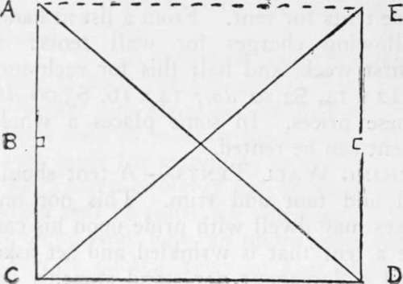
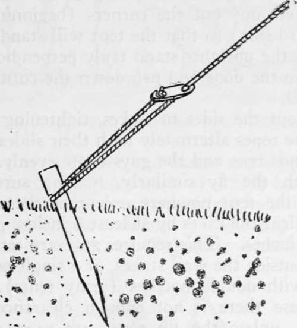
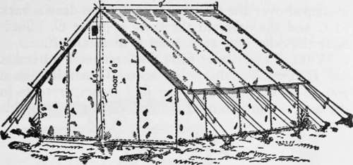

Pitching Wall Tents
Description
This section is from the book "Camping And Woodcraft", by Horace Kephart. Also available from Amazon: Camping and Woodcraft.
Pitching Wall Tents
A tent should stand squared and taut and trim. This not only that one's eyes may dwell with pride upon his camp, but because a tent that is wrinkled and set askew will not shed a downpour nor stand stanchly against a gale.
In erecting any square or rectangular tent, the first thing is to locate the corners, and from them to determine where the corner guy stakes are to be driven. Soldiers do this by measuring with the upright poles, but as the height of a common tent may not bear the right relation to its spread, for this purpose, a knotted string may be better.
Set up the tent in your yard at home and adjust poles and guys until the angles of the wall are true and the canvas is drawn smooth all around. To square the corners, observe that a triangle the sides of which are 3, 4 and 5 ft., or multiples of these, forms a right angle.
Then take a stout fish-line, fasten a small peg at one end, and drive this peg close into one corner of the tent {A, Fig. 7). Draw the line straight (gently, so as not to stretch it) to center of upright pole (B) (if there be one) in the doorway; tie a knot in it there, and then go on to the corner C, where it is knotted again. Drive a small peg at C, pass the string around it, and on to the corner D, where another knot is tied and peg driven. Then draw the line diagonally back to A, and knot it. Cut the line at the last knot, reel it up on its peg, and keep it stowed with the tent for future use.
When the camp ground is reached, it is but the work of a moment to peg out, with the knotted string, first the triangle A CD and then, reversing, I.DC. You then have located exactly the positions of the four corners for your tent, and marked where the uprights shall be set, and the tent is sure to stand " square".
A wall tent is set up with inside or outside poles, and its wall and fly are guyed out either to stakes or to horizontal poles set up on posts. We will consider these methods in turn.
Wall Tent On Inside Poles, Staked
This is the usual way of setting up a wall tent, with or without a fly; but it is not the best, except when it is necessary or expedient to carry shop-made polefc and stakes with the outfit, as in the case of an army, the stakes forward and backward to loosen them, but slip a looped rope over the notch and pull at angle that stake was driven.) Corner stakes are driven several feet away from tent, depending on slope of roof, and two or three feet outward, fore and aft, to make the guys draw diagonally. ' Now unroll the tent and drag it away by the ridge until it is laid out flat over the ground selected.
Fig. 7. Locating Corners of the Tent.
Fig. 8. Tent Stake and Guy Rope.
Insert ridge pole (rounded side up) inside the tent, with its holes for the spindles (iron pins in end of uprights) meeting the grommets or large eyeor of a party traveling by wagon and frequently moving camp.
Having chosen the best frontage, lay out the corners and end centers with cord and small pegs, as described. Then drive the corner guy stakes diagonally outward from tent corners, slanting them as shown in Fig. 8. If fly guys are to be looped over them, as well as wall guys, the stakes should be long enough to project well and still take firm hold in the ground. (When striking a tent, do not work lets at ends of tent ridge. Place uprights at front and rear, at right angles to ridge, spindles inserted in ridge pole and passing out through peak grommets.
If a fly is to be used, lay it out flat over the tent, spindles passing through grommets as in the tent.
If end guys are to be run out fore and aft, or the storm set is used (Fig. 10), slip the loops of the long guys over the spindles.
A man at each end now takes hold of an upright, and the two raise tent and fly together. Then one or two men hold the tent in position while one or two others guy out the corners (beginning on the windward side) so that the tent will stand by itself. See that the uprights stand truly perpendicular.
Tie up the door and peg down the corners of the tent wall.
Guy out the sides to stakes, tightening or slackening the ropes alternately with their slides until the tent stands true and the guys draw evenly.
Stretch the fly similarly, making sure that it touches the tent nowhere except at the ridge. It should clear the eaves by at least 6 inches, preferably 9 or 10 inches. This requires an extra set of stakes driven outside the wall stakes, or a single set of long stakes with double notches (army tents). In the latter case there is not enough clearance for hot weather, unless the fly ropes are propped up on crotched sticks (see further under Action of Wind on Tents). A better method, without any stakes, is described later.
Finish pegging down the tent wall; or, if there is a sod cloth, weight it down with flat rocks or poles, which is a better rig, not only to exclude draughts ami insects, but also because then the tent wall can readily be clewed up to the eaves, in fine weather, to sun and air the interior.
The tent now stands square and taut all around (Fig. «0, secure against all but heavy end winds. To brace it against end strain you could run a pair >of long guys out fore and aft; but such a rig is a never-ending source of wrath and objurgation. It is forever in the way, prevents having the camp-fire in front where you want it, and is sure to be run into or tripped over by anyone who goes out of the tent at night.
Fig. 9. U. S. Army Wall Tent with Fly. (Officers' Tent).
Continue to:
- prev: Second-Hand Tents
- Table of Contents
- next: Storm Set